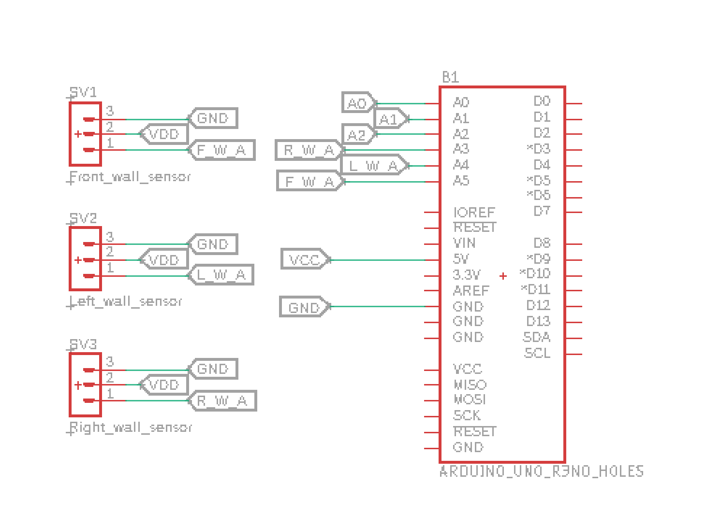

Goals
• To have the robot successfully circle a set of walls. • To have the robot successfully avoid other robots.• To have the robot demonstrate that it recognizes walls and avoid robot.
Wall Following
We decided to use 3 different IR wall sensors, so we would be able to determine where the walls are, with the assumption that there would be no wall behind us. The IR wall sensors were hooked up to our robot using analog pins. As we had three different ones, each had to connect to its own analog pin. The basic connections were as shown below:
Robot Detection
The main issue with integrating the FFT library into our main code was a timer conflict with the servo library. We realized that the FFT function would shut off timer0 on the arduino, while the servo library relied on timer0 to work. The FFT would shut off timer0 in order to reduce noise when the function is picking up the frequencies from the phototransistor, so the optical team tested how significantly the presence of noise affected the IR reading. We eventually came to the conclusion that the noise was negligible, so we commented out the section of code that sets the timer0 register to 0. Our FFT code also changes the default values of several registers as it runs. When integrating the FFT code into the main code, we needed to make sure to reset the registers to allow the main code to run as expected.
When implementing IR detection, we noticed that the phototransistor had trouble detecting the IR hat when it wasn’t directly in line with it. To increase the effectiveness of IR detection from all directions, we decided to add a second phototransistor in parallel facing the opposite direction. After testing this setup, we realized that because each transistor passes a weak current even when not stimulated by the IR hat, the total current through the IR detection circuit increased. To remedy this change, we raised the threshold value that signaled a detected robot.
Our robot in action:
In our final design, we implemented two LEDs to indicate when the robot detected a wall or a robot. As shown in the video above, a green LED would light up upon detecting a wall, and a yellow LED would light up when the the IR hat was detected.
Currently, the detection circuit is at the back of the robot. When we ran the code and were testing the IR hat, you can see that the robot turns towards the IR hat rather than away from it. This is not how the final version shall be. Rather the circuit will be near the front of the robot and then when it runs, the robot will actually be turning away from the IR hat. This was a consequence of available space on our robot, which we will address using 3D printing in the future.